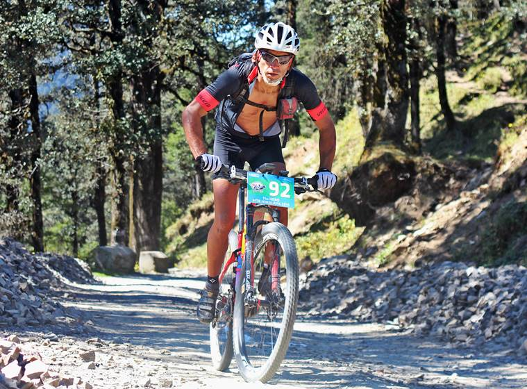
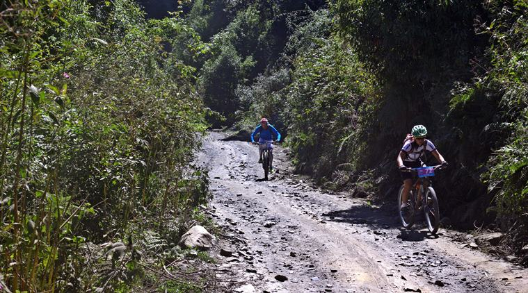
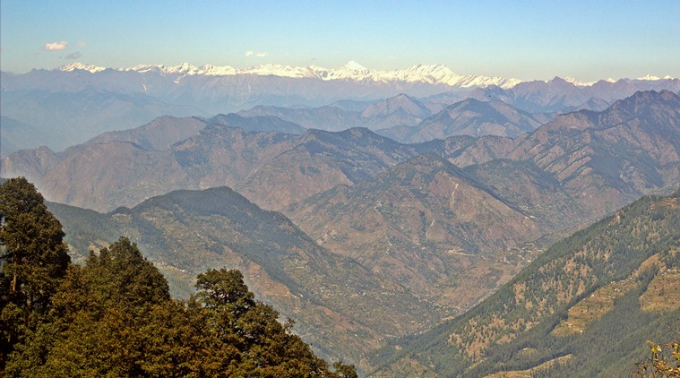
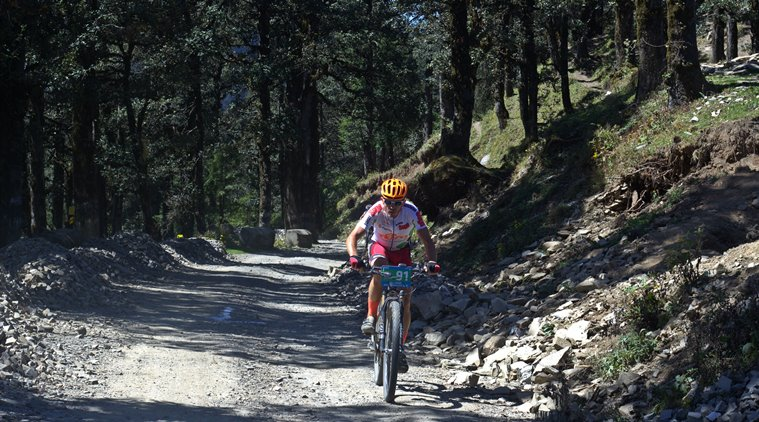
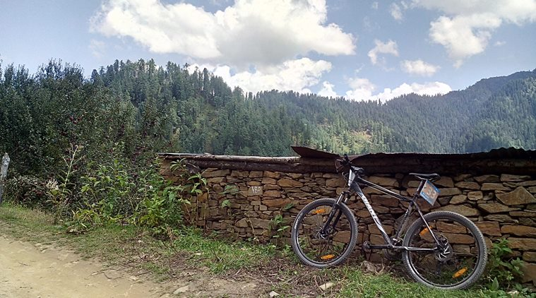
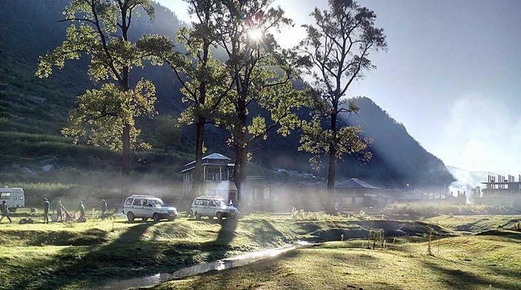
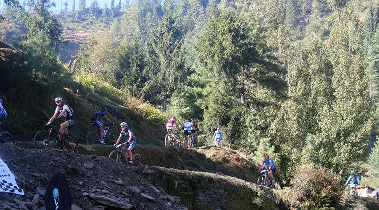
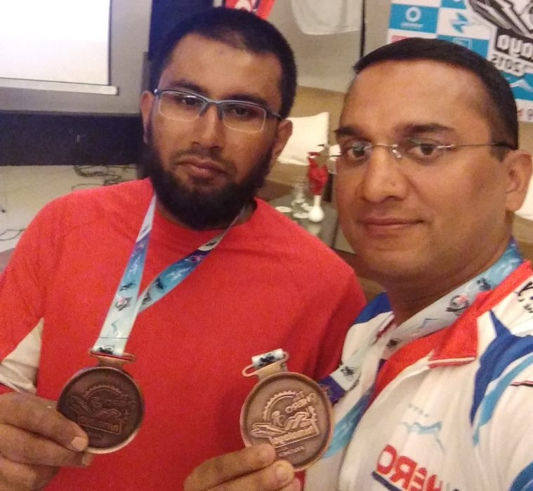
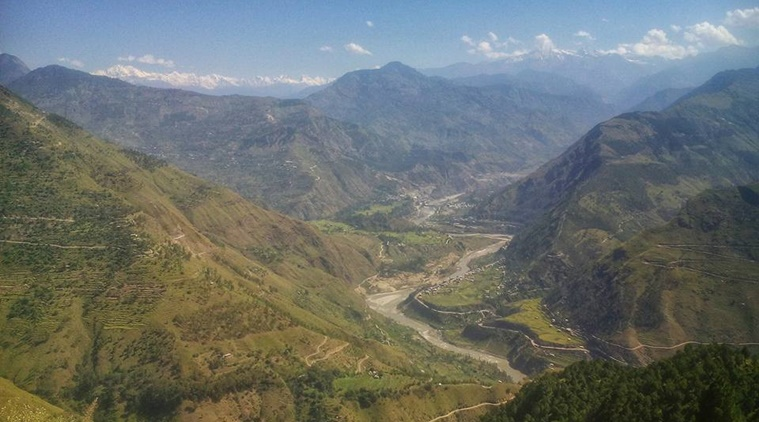

With unwavering focus, he deftly maneuvered his bicycle over sharp rocks, slamming disc brakes every now and then to avoid a crash. He’d rise up from the saddle, balance his weight on the pedals and nervously shift his weight back to maintain the optimum biomechanics for a downhill sprint. The constant rattle of the handlebar transferred every little shock down to the bone, and it was hard to hold the same position for more than 10 minutes. But this was the only time when he could gain some lost ground. With 30 minutes of riding time left, Amit Jindal was hoping against hope. That’s when the unexpected happened.

An international participant at the MTB Himalaya. (Source: Abhimanyu Chakravorty)Salman Siddique was a speck in the distance, but it wasn’t too difficult to spot him with his white-and-blue race jersey, slowly moving with intent amid the lush green Deodar forests of Himachal Pradesh. It was 5.45pm, the dying sun had painted a mellow honey shade over the valley. The meditative silence was occasionally interrupted by a flight of birds, whose boisterous chatter resonated like waves travelling deep inside the heart of the mountains, and fading. In that fleeting moment, when his own physical limitations ceased to be the centre of attention, Jindal allowed himself a brief window to soak in the virgin experience and feel the cold, bohemian wind skim against his sweaty skin.
Ten minutes down, he glanced over his shoulder to see Siddique closing the gap. Soon enough, Siddique caught up with him. They waved at each other and mutually decided to ride together without getting off the bike. To cope with his own limitations was a big challenge, but after riding with Siddique, Jindal had an epiphany. “The shared sense of accomplishment in the end is much more than winning,” he explained. Two people belonging to different cultural backgrounds, with nothing in common except the love for cycling, went on to forge a partnership that saw them through the race.
ALSO READ: True grit: Women outperform men in gruelling MTB race
“It’s easy to understand the other person because they are going through the exact same suffering as you are. Amit Jindal is mentally very strong, and we kind of are at the same level in terms of cycling. So we could easily stick to each other,” says 28-year-old Siddique, who works as a software engineer in Bangladesh. This was his second MTB Himalaya experience.

Riders from Nepal at MTB Himalaya. (Source: Abhimanyu Chakravorty)In its 11th edition now, MTB Himalaya is touted as the world’s third toughest mountain cycle race. It is a 600km cross-country race that starts from Shimla, Himachal Pradesh, and the entire route takes riders through scenic mountain ranges, river crossings, and some of the pristine parts of the Himalayan backcountry. Touching a maximum altitude of 10,660ft above sea level, the race terrain is like a jab in your face, if you’re an amateur rider.
When you’re exposed to seven days of riding around 100km per day — on gravel, broken tarmac, jeep tracks, rocks, mud and sand — your mind and body are in a state of flux. Over the first three days, riders come to terms with the struggle. Then the overarching realisation that the race will never get easy, at any point of time. While some adapt to the challenge, some quit. Of the 68 riders, 28 couldn’t finish the race. “When you start in the morning you are not really sure if you can finish the day. You are sure that you are going to ride the next 10 hours in very tough conditions. Three hours in you start to seriously question your intelligence,” says Siddique.
But in these overwhelming conditions, when your body gives up, when you’re out of luck and out of time, real friendships take root along the way.

View from Jalori Pass. (Source: Abhimanyu Chakravorty)In a global racing event like the MTB Himalaya, riders from across the world compete at a relatively high altitude. It draws a very niche set of people from all over the world who share a common passion for mountain biking. The sense of belonging to a close-knit community of cyclists where there’s a free exchange of ideas, and friendly banter and teamwork can bring out the best in people at the worst of times.
Take Jindal’s case, for instance. Siddique from Bangladesh was just another rider, till Jindal bumped into him during the fag end of the day on stage two. Both Jindal and Siddique struggled to finish each stage, and would walk into the camp after sunset when all other riders would be discussing the highlights of the day.
It also gave Jindal an opportunity to know Siddique up close as a person. He saw in him a friend whom he could rely on for any bike-related issues and pep talks when he felt demotivated. “Salman had immense knowledge pool about cycles and he helped me in fixing my brake pads, tubes, etc. He gave me valuable tips that I wasn’t aware of as an amateur cyclist, like to stop after 15 minutes of steep downhill rides to water the brake pads to avoid a burn out,” says Jindal, 35, General Manager at Ericsson Global Services, in Gurgaon.

A foreign participant climbing the Jalori top in MTB Himalaya. (Source: Abhimanyu Chakravorty)And Jindal’s wisecracks along the way kept Siddique from thinking about his own shortcomings. “Amit is very good at talking. We used to talk about everything when we were riding. Starting from rides we have done, to family members and what we do for work. This is the good thing about teamwork. When I am feeling down my teammate will help me out. When he is feeling down I try to push him to break the barrier,” says Siddique.
Although Siddique had attended the MTB Himalaya last year as well, the race didn’t get any easier for him. The software engineer says the race was longer and tougher this year. The real problem was rocks and steep downhills. “Dhaka is a perfectly flat city situated at the sea level. Going from here to a place which is 2,200m higher and totally hilly was really tough for me. You have to understand what this race is. You are going up all the time. And when you are not going up you are going down. Mostly through gnarly rocky double track. Most people will love downhills. But not these ones. They can destroy your hand in 10 minutes,” he explains.

It was on the steep incline to the Jalori top that both ran out of steam and out of luck. Jindal wanted to quit midway, and Siddique didn’t see himself anywhere near 3,010m-high Jalori top from where the camp was an additional 7km. This was the highest point in the entire race and both describe the climb as ‘nothing less than treacherous’. Not too long before this race segment was flagged off, Siddique whipped out the race route and explained to Jindal in detail — how to break it down into manageable sections. But now, it was more about who would break first, them or their bikes.
“Past experience counts and that’s why I did better than what I otherwise would have done,” laughs Siddique. Jindal adds: “Because of the very high gradient climb to Jalori, I took too much time to reach feed Station 1. At that time, I thought of quitting the race so I asked a race marshall to be ferried back to the camp site in a car. They suggested I wait or go slow towards next service point. I decided to go slow, and that’s when I met Salman. So, I gathered back all the lost courage and energy and decided to complete the race.”

MTB Himalaya Kullu Sarahan Campsite. (Source: Abhimanyu Chakravorty)They’d start each day micro-analysing the race route, the steep elevation gain, roll their eyes, then talk about the distance, roll their eyes some more and and let out a deep sigh almost in unison. In between the race, both would stop multiple times and enquire about the remaining distance. “We really enjoyed each others’ company and were able to match each other’s pace. We took breaks together at feed stations. Salman used to carry the maps and kept sharing the GPS statistics about the route while also encouraging to complete the course,” said Jindal. At the end of it, the race-book was so battered and soggy with sweat that it was hard to figure anything out, expect the consolation that they still had a physical copy of it.

Riders begin stage 3 of race day from Gada Gushaini campsite in Himachal Pradesh. (Source: Abhimanyu Chakravorty)Every evening, after the end of each stage, they’d huddle around other riders and talk about how they barely managed to reach the campsite. After attending the race, Siddique understood his training in Dhaka wasn’t enough for climbing. The level of power needed to complete a race of this magnitude could not be achieved in flats. “The best training for climbing is climbing. No way around it,” says Siddique.
Jindal, too, shared similar thoughts. Although he had participated in MTB Shimla , a 2-day cycling event on similar lines as the MTB Himalaya, and a Manali to Leh cycle trip, he admits “none of the earlier experiences were any close to MTB Himalaya”.
“I hardly had any mountain biking practice prior to the event. So, while I was ready to cover for the long-distance rides, elevation gain was a major challenge,” says the 35-year-old. For the two, planning each stage separately assumed a lot of importance. The time they spent at the campsite after a hard day of riding, was when they thrashed out a plan to make it through the race without quitting. “The point was to get from one feed-zone to the next, to set smaller targets than big ones. The problem was sometimes the feed-zones weren’t in the places marked on the route book,” says Siddique.
And because Jindal and Siddique were usually the last ones to reach the finish line, the camaraderie between both wasn’t visible to many, but one.

Salman Siddique (left) and Amit Jindal with their finisher’s medals. (Source: Amit Jindal)A commandant with Sashastra Seema Bal, 42-year-old Rajesh Thakur is no pushover. He did better than many youngsters half his age and finished with poise. But he disclosed later that he had trained for only one-and-a-half months for the race. There were sections in the race where he closely observed Siddique and Jindal for he was only a few minutes ahead of them in the race at each stage. “Amit and Salman would go full force in the beginning, and then eventually lag behind all the others,” notes Thakur. “Whenever Salman was ahead of Amit, he would stop and wait till he caught up. Salman would always help people out with their cycle issues. Their attachment was immense,” he adds.

(Source: Abhimanyu Chakravorty)Experiences like these are also lessons in themselves. When you’re out there pushing your endurance threshold every second, you learn to respect people for what they are and their capability in overwhelming circumstances. “What you will realise is that you are capable of things that you can’t even imagine,” says Siddique. “When you meet someone for the first time, you don’t get to see the iron core inside. You don’t see the determination. You don’t see the motivation. And you don’t see how helpful people are. An experience like this exposes these to you about other people. You become strong. You want to be as good as him. You want the strength the other guy has.”
Cycling can bridge the gap between nations
Siddique is of the opinion that cycling can heal relationships between nations and minimise the deeply entrenched prejudices that may exist. In an event where different cultures and nationalities intermingle, the friendly atmosphere fosters tolerance and empathy. “There are a lot of riders in Bangladesh who want to ride through India. And a lot of Indians want to ride in Bangladesh. This will only increase the cultural exposure and decrease the political differences that exist between India and Bangladesh. We can create a very strong bond among the riders of both countries to reduce the gap that exists,” he adds.
Jindal echoes his sentiments. “Cycling has helped me build friends across borders and I have now extended my community of friends who hail from Bangladesh, Dubai, Nepal, Portugal, England. This event has particularly helped me bond with two cyclist friends from Bangladesh and we had a good time together sharing our experiences of cycling. We discussed cycling-related events happening in Asia, and what it takes to participate in those events, etc. I am glad that they have shown interest to come back to India for participation in similar events in large numbers next year.”
“But no matter what,” Siddique says, “when you finish something you knew was impossible six months back, you feel invincible.”